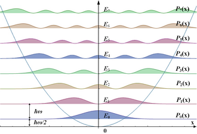
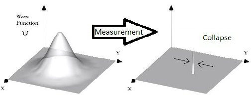

Introduction to Measurement
Measurement in quantum mechanics is a crucial concept that plays a fundamental role in the transition from quantum superposition states to classical observable states.
When a quantum system is measured, it collapses from a superposition of states into one of its possible eigenstates, with each outcome determined by a probability amplitude.
Quantum Superposition
Quantum superposition is a principle where a quantum system exists in multiple states simultaneously until measured. This phenomenon is exemplified by particles such as electrons that can be in a superposition of spin-up and spin-down states until observed.

Collapse of Quantum States
Upon measurement, the wavefunction of a quantum system collapses to one of its possible states, each with a probability determined by the system's quantum state before measurement.
This collapse results in the system exhibiting classical behavior, with observable properties akin to those predicted by classical physics.
